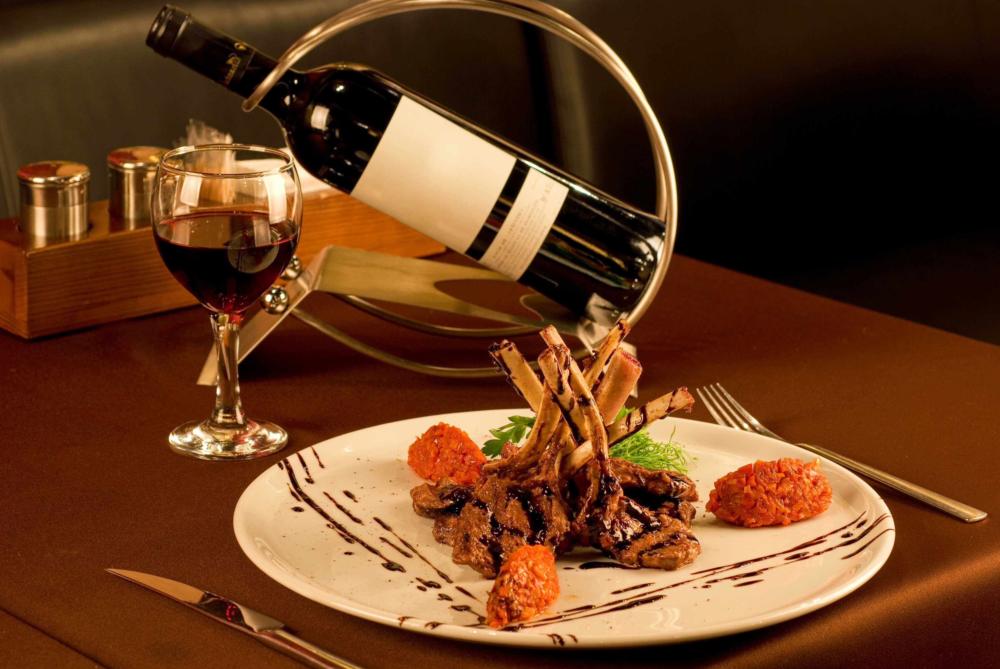
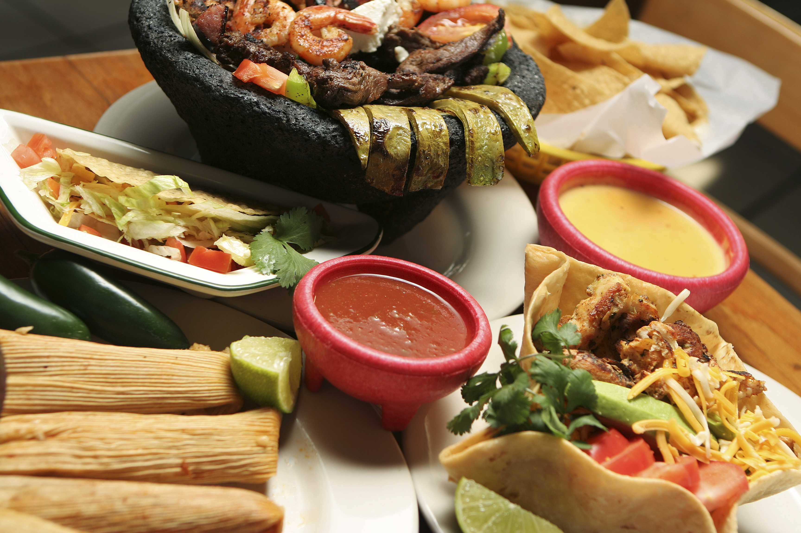

Acasa
GoOut
Restrictii Alimentare
Stil de viata
Bucataria Italiana
Tortellini la tigaie
Lasagna cu spanac
Tiramisu cu capsuni

Bucataria frantuzeasca
Cordon bleu de pui la cuptor
Cornulete cu ciocolata
Macarons

Bucataria mexicana
Burrito cu pui si avocado
Fajitas de pui
Tort trei feluri de lapte